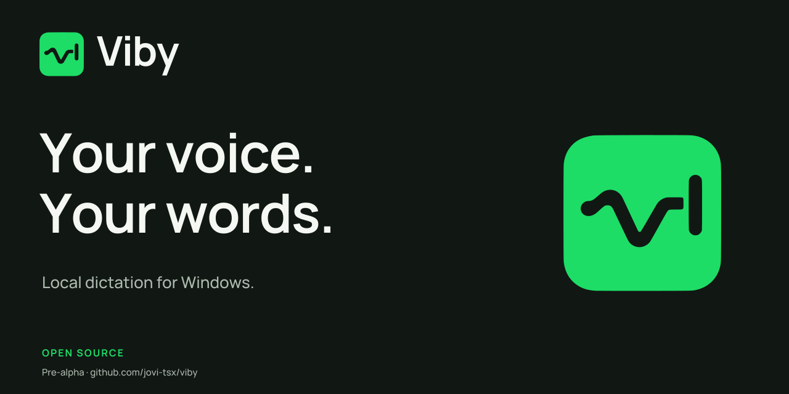

Minimalist. Welcoming. Yours.
Your voice.
Your words.
A little space between speaking and writing.
A calmer way to bring your voice to Windows.
A Windows dictation bridge for your local AI.Download the kit
One wave. One cursor. One simple idea.
Speech becomes a letter.
The cursor makes room for it.
A familiar green.
A quieter setting.
Bright where it helps. Soft everywhere else.
The original green stays at the center.
Viby green#1DDD66
Ink#111713
Paper#F4F7F2
Green ink#136D3A
The voice in the letters
Open shapes.
Clear thoughts.
Manrope brings an easy rhythm to a technical tool.
Locally bundled. Ready to read.
Manrope · Variable 200–800
Your dictation settingsSave changesChanges saved
The same Viby,
wherever it appears.
Light, dark and one color.
One identity with room to adapt.

Quiet by design.
Helpful by nature.
Say what happened. Make the next step clear.
Let the person's work take the lead.